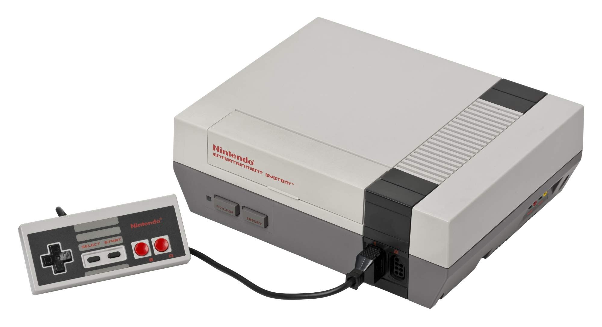
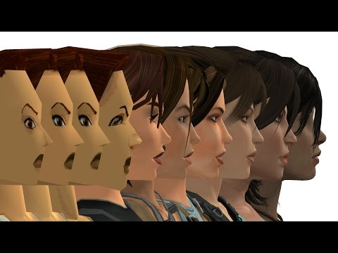

Historia de los Videojuegos
Los videojuegos han evolucionado desde simples píxeles en pantallas hasta mundos abiertos hiperrealistas.
Desde el nacimiento de Pong en los años 70 hasta los actuales títulos con gráficos fotorrealistas, la industria ha cambiado radicalmente.
Las consolas como el NES, PlayStation y Xbox marcaron hitos en la historia del gaming.



Los videojuegos comenzaron con arcades y consolas de 8 bits.
Con la llegada de la realidad virtual y el juego en la nube, el futuro de los videojuegos es cada vez más emocionante.